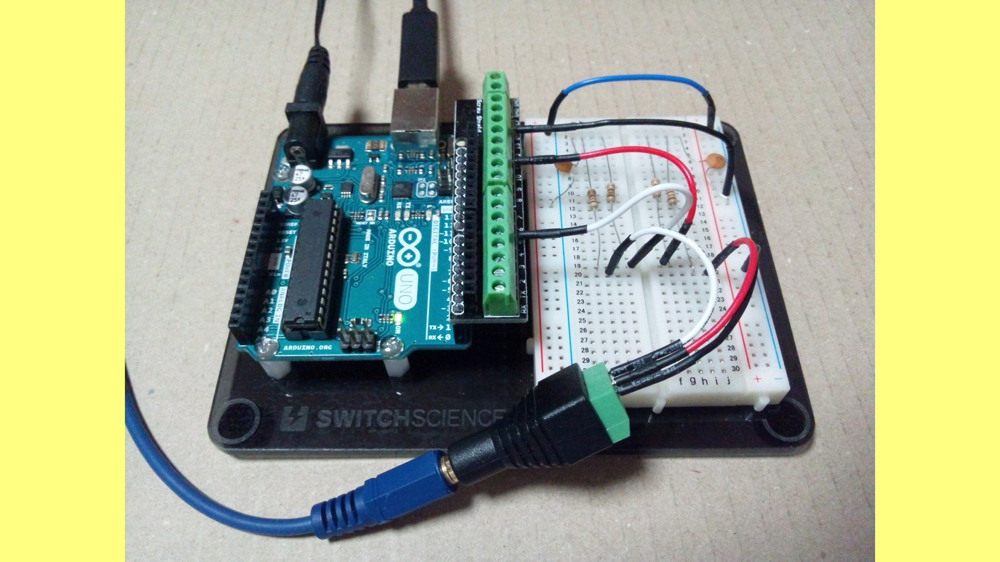

risgk.github.io
risgk.github.io

ISGK Instruments
No.8 Digital Synth VRA8-Q (Under Construction)
Quadraphonic Synthesizer for Arduino Uno (2020)

No.7 Digital Synth VRA8-N
Monophonic Synthesizer for Arduino Uno (2018-2019)
- View on GitHub, VRA8-N CTRL
- Digital Synth VRA8-N（Arduino Uno用） - Fabble
- Digital Synth VRA8-N for Arduino Uno - Instructables
- Digital Synth VRA8-N v1.0.0 Demo - YouTube
- 出展 (プロトタイプ): NT京都2018
- 出展 (v1): Maker Faire Tokyo 2018 (説明資料),
SWEST20,
ASBS18,
Ogaki Mini Maker Faire 2018 (説明資料),
ABCD浜松 (Damonde Hamamatsu),
OSC2019 Hamanako (説明資料)
- 出展 (v2): Maker Faire Kyoto 2019 (説明資料),
Maker Faire Tokyo 2019 (v2説明資料,
mode-VC説明資料),
SWEST21 (mode-VC),
サウンドデザインファクトリーin浜松2019
- コラボ企画: 奇楽堂 SAXduino (VRA8-N音源搭載)
- 紹介記事: 【藤本健のDigital Audio Laboratory】本格&おもしろシンセ集結! 空き缶のMIDI楽器、クマ型リズムマシンがMaker Faireに-AV Watch
No.6 Digital Synth VRA8-Px
3 Voice Paraphonic Synthesizer for Arduino Uno (2016-2017)
No.5 Digital Synth VRA8-P
3 Voice Pseudo Polyphonic Synthesizer for Arduino Uno (2016)
No.4 Digital Synth VRA8-X
Experimental Synthesizer for Arduino Uno (2015)
No.3 Digital Synth VRA8-M
Monophonic Synthesizer for Arduino Uno (2015)
No.2 Digital Synth WRA32
Virtual Analog Synthesizer Web App (2014)
No.1 Digital Synth VRA8
Virtual Analog Synthesizer for Arduino Uno (2014)